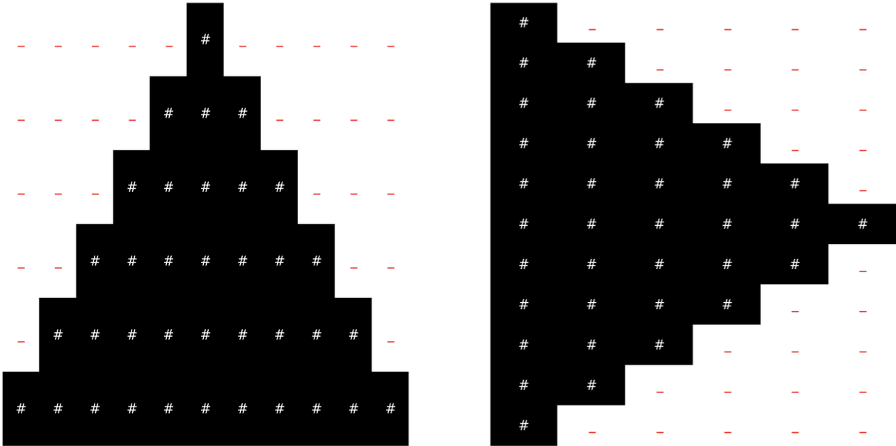

In the ancient land of Trigonia, the sacred temple is adorned with triangular symbols that hold deep mystical significance. However, the temple’s guardian is unsure how to carve the patterns correctly—should they be aligned by height or by width?You, as the royal architect, have been summoned to create a precise blueprint for the temple's triangular designs. Given a number n and a mode k, your task is to generate the correct triangular pattern based on the guardian’s request.
n (1 ≤ n ≤ 20) - the size parameter of the triangle.
k (0 ≤ k ≤ 1) - determines how the triangle should be oriented.
k=0, print a triangle with height n, centered horizontally, with a base width of 2n−1.
k=1, print a triangle with width n, centered vertically, with a base width of 2n−1.
#, while areas outside the triangle should be filled with _.
Two space-separated integers: n and k.
A grid representing the requested triangle pattern.
| Input 1 | Output 1 |
|---|---|
3 0 |
__#__ _###_ ##### |
| Input 2 | Output 2 |
|---|---|
5 1 |
#____ ##___ ###__ ####_ ##### ####_ ###__ ##___ #____ |
Content by Fernando Silva and Vanessa Silva (DCC/FCUP), copied from the original website.